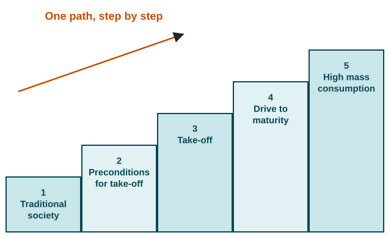

Theories of Development
Rostow's stages say every country can climb one path from traditional society to high mass consumption.
Part 1 · Hook
Why this matters
Part 2 · Before you start
What this builds on
Part 3 · Prerequisite check
Quick check before you start
1. In world-system terms, what work is typical of the periphery?
- Raw materials and low-wage work
- Research and head offices
- Top government decisions
- Software and finance
Show the answer
The periphery mostly supplies raw materials and low-wage labor.
- Correct: Raw materials and low-wage work:
- Research and head offices:
- Top government decisions:
- Software and finance:
2. What is commodity dependence?
- Relying on one or a few raw exports
- Buying goods from many countries
- Growing food for your own family
- Taxing goods that enter a country
Show the answer
Relying on one or a few raw exports ties earnings to world prices.
- Correct: Relying on one or a few raw exports:
- Buying goods from many countries:
- Growing food for your own family:
- Taxing goods that enter a country:
3. Which model has stages of birth and death rates?
- The demographic transition model
- Least cost theory
- The gravity model
- Bid-rent theory
Show the answer
The demographic transition model tracks birth and death rates; do not confuse it with Rostow's economic stages.
- Correct: The demographic transition model:
- Least cost theory:
- The gravity model:
- Bid-rent theory:
Part 4 · See it
See it first

Part 5 · Step by step
How it works, step by step
- Rostow assumes every country can invest and trade its way uphe sees five stages, from traditional society to high mass consumption
- Colonial rule built economies that export raw materials to the coredependency theory says the periphery stays poor because of those ties
- The world forms one connected economyworld system theory sorts countries into core, semiperiphery and periphery, and lets them move
- A country relies on one export, such as Zambia's copperits earnings rise and fall with world prices (commodity dependence)
Part 6 · Key ideas
Key ideas
- Rostow's stages: traditional society, preconditions for take-off, take-off, drive to maturity, high mass consumption. Limit: one Western path, no colonial history.
- World system theory (Wallerstein): one world economy of core, semiperiphery and periphery; countries can move. Limit: tiers are hard to measure.
- Dependency theory: the periphery is poor because of its dependence on the core, built by colonialism and unequal trade. Limit: East Asian growth through trade.
- Commodity dependence ties a country to one export's price, as copper does for Zambia.
- Never say a country "is in" a stage or tier as a fact: say its data are "consistent with" it.
Part 7 · Misconception
A common mistake
The wrong idea: Rostow's stages and the demographic transition model are the same thing.
What actually happens: Both have stages, but Rostow's describe the economy (take-off, mass consumption) and the demographic transition model describes birth and death rates.
Part 8 · Check yourself
Check yourself
Exam-style questions. Anything you miss goes into your review queue.
Data
Copper and the economy of Country D, 2000 to 2020
Invented data for practice.
1. Copper makes up about 75% of Country D's exports. Which statement best describes the pattern in the chart?
- Earnings rise and fall with the price
- Export earnings rise steadily whatever copper does
- Export earnings move opposite to the copper price
- Earnings stay flat
Show the answer
The two lines move together, which is what happens when one commodity makes up most of a country's exports.
- Correct: Earnings rise and fall with the price: Right: both lines peak in 2010 and both drop by 2015.
- Export earnings rise steadily whatever copper does: Earnings fall from 350 to 190 between 2010 and 2015, along with copper.
- Export earnings move opposite to the copper price: The two lines move in the same direction in every period.
- Earnings stay flat: Earnings swing widely, from 100 up to 350 and down to 190.
2. Which concept does Country D's situation illustrate most directly?
- Commodity dependence
- High mass consumption
- The informal sector
- The gender wage gap
Show the answer
An economy that relies on one or a few raw exports is commodity dependent, so its earnings follow world prices.
- Correct: Commodity dependence: Right: relying on one raw export ties the economy to that commodity's world price.
- High mass consumption: That is Rostow's last stage; nothing here shows it.
- The informal sector: The chart is about exports and prices, not unregistered work.
- The gender wage gap: The chart says nothing about pay for women and men.
3. What is the most likely effect of the 2010 to 2015 change on Country D's government?
- Tax income falls, so it borrows
- It gains a surplus as copper buyers pay more
- It moves up a stage in Rostow's model
- It grows more diverse
Show the answer
When the main export's price falls, export earnings and taxes fall, so governments often borrow or cut services.
- Correct: Tax income falls, so it borrows: Right: lower export earnings mean lower tax income, which can lead to debt or cuts to schools and clinics.
- It gains a surplus as copper buyers pay more: Copper prices fell in this period, so buyers paid less.
- It moves up a stage in Rostow's model: A sharp fall in earnings does not fit a climb through the stages.
- It grows more diverse: A price fall does not by itself create new industries.
4. Put Rostow's stages of economic growth in order, from first to last.
Rostow's stages of economic growth
- Stage 1
- Stage 2
- Stage 3
- Stage 4
- Stage 5
Pick a piece, then the place it belongs. Drag works too. Pick a filled place to take its piece back.
Show the answer
Rostow's stages run: traditional society, preconditions for take-off, take-off, drive to maturity, high mass consumption.
- Stage 1: Traditional society
- Stage 2: Preconditions for take-off
- Stage 3: Take-off
- Stage 4: Drive to maturity
- Stage 5: High mass consumption
5. A student writes: "In Rostow's model, stage 2 is when death rates fall but birth rates stay high." What is wrong?
- Rostow's stage 2 is when birth rates fall
- The student swapped Rostow's stages 2 and 4
- It describes the demographic transition
- Rostow's model has no stage 2
Show the answer
Both models have stages, so they are easy to confuse: Rostow's describe the economy; the demographic transition model's describe births and deaths.
- Rostow's stage 2 is when birth rates fall: Rostow's stages are not about birth or death rates at all.
- The student swapped Rostow's stages 2 and 4: The mistake is mixing two models, not swapping stages.
- Correct: It describes the demographic transition: Right: falling death rates with high birth rates is stage 2 of the demographic transition model; Rostow's stage 2 is the preconditions for take-off.
- Rostow's model has no stage 2: It has five stages; stage 2 is the preconditions for take-off.
6. South Korea grew from a mostly farming economy in 1960 into a major maker of ships, cars and electronics. What does this suggest about world system theory?
- Countries can move between tiers over time
- The periphery and the core are fixed forever
- The model works for Africa alone
- South Korea's growth disproves the other development models
Show the answer
World system theory allows mobility: a country can move from the periphery toward the core, as South Korea is often said to have done.
- Correct: Countries can move between tiers over time: Right: South Korea is often described as moving from the periphery toward the core.
- The periphery and the core are fixed forever: South Korea's rise shows countries can change tiers.
- The model works for Africa alone: The model is meant for the whole world.
- South Korea's growth disproves the other development models: One case shows a model's range, not that every model fails.
Part 9 · Summary
Summary
Part 10 · Up next
What comes next
Part 11 · Connections